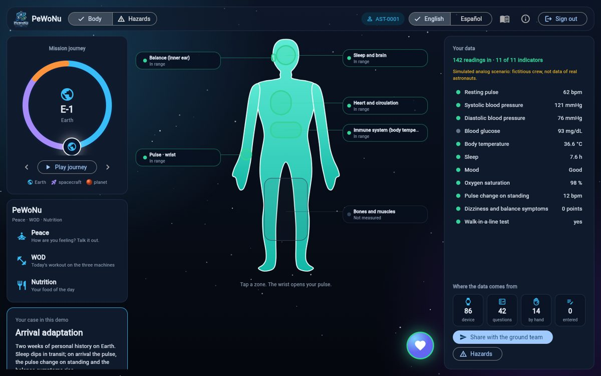
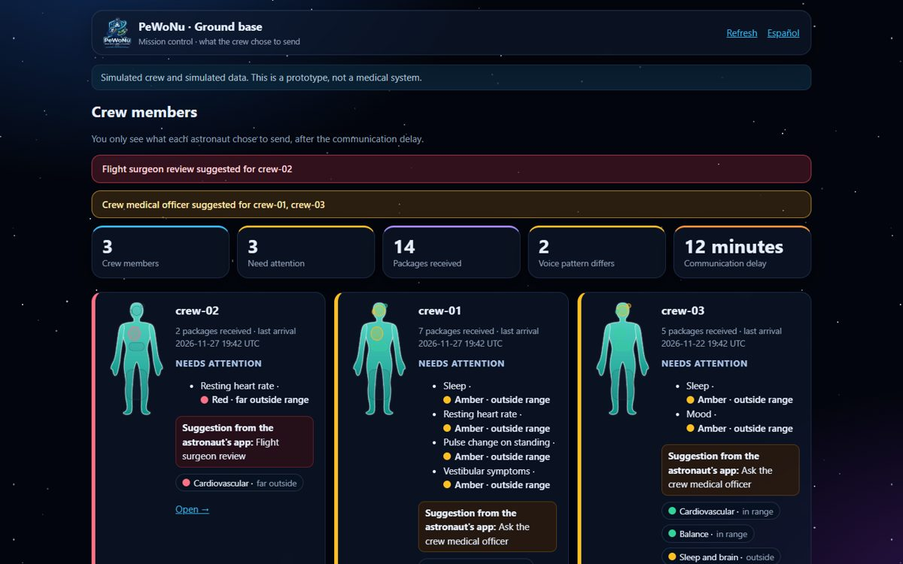

Peace · WOD · Nutrition
A wellbeing prototype for astronauts on long missions. It compares each person with their own baseline, not with an average, and shares only what the astronaut decides.
Prototype with simulated, analog data. It does not diagnose.Three pillars, one platform
Mind, movement and food for crews that are too far from Earth for real-time help.
Peace
Mood check, a guided manual pulse and an optional voice log. The audio is discarded; only numbers are kept and no emotion is inferred.
WOD
The workout of the day on the three ISS machines (T2 treadmill, CEVIS bike, ARED resistive device), from age, weight and bone density.
Nutrition
A daily energy estimate next to the range used by station dietitians, and a meal log by ISS food type.
Why it matters
On a mission to Mars the crew is far from Earth and from its doctors, and every message takes minutes to arrive.
How it works
Normal is personal, so every status is compared with the person's own history, and it says so.
Intake
Mood faces, manual pulse, simulated wearables, workouts and meals.
Personal baseline
A median with a robust band per person and per space (Earth, spacecraft, planet). Gray when there is not enough data.
Status with a reason
Green, amber, red or gray, always saying what it was compared with. No AI model in the alert path.
Share what you choose
Only what the astronaut confirms, as HL7 FHIR R4, to the ground base after a simulated delay.
Install it in one command
The installer sets up everything you need: uv, the right Python, the code and every dependency. Then it starts PeWoNu.
irm https://raw.githubusercontent.com/MrT-coder/pewonu/develop/install.ps1 | iexOpen PowerShell (Start menu → type “PowerShell”) and paste the command.
curl -LsSf https://raw.githubusercontent.com/MrT-coder/pewonu/develop/install.sh | shOpen a terminal and paste the command.
- Run the commandThe first install downloads Python and the libraries and takes a few minutes. You need an internet connection only this once.
- Two pages open in your browserThe astronaut app at 127.0.0.1:8550 and the ground base at 127.0.0.1:8560. Everything runs on your computer only.
- Sign in as a simulated astronautUse the code AST-0001, AST-0002 or AST-0003. Each one is a different case. The English / Español button changes the language.
- Start it again any timecd ~/pewonu and uv run pewonu (Windows: cd $HOME\pewonu)
- Prefer to read the script first? install.ps1 · install.sh. Step-by-step manual install is in the README.
- On Linux, the optional voice log needs the PortAudio library: sudo apt install libportaudio2.
- To install in another folder, set PEWONU_DIR before running the command.
The two systems
The astronaut app runs on board. The ground base shows only what the astronaut chose to send, after the communication delay.


Open source, with credit
PeWoNu is released under the MIT license. Use it, fork it and build on it: just keep the license notice and give credit to the PeWoNu team.
Frequently asked questions
Does PeWoNu diagnose?
No. It compares a person with their own history, explains what it compared against and suggests who could be told. It gives no diagnosis, no doses and no clinical thresholds.
Does it need internet?
Only for the first install. After that, both systems run on your computer without internet.
Where does the data go?
It stays on the computer. The astronaut app sends the ground base only what the astronaut chooses and confirms, packed as HL7 FHIR R4. The voice log keeps numbers only; the audio is discarded.
Is the data real?
No. The crew and all data are fictional and simulated, and the app labels them as such. Nothing here has been validated for use in space.